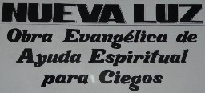
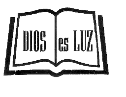
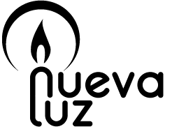

¿Cuándo comenzó Nueva Luz?
En el año 1975 comenzó la actividad de este ministerio, después de que su fundador Antonio Padilla quedara definitivamente ciego. Tras un largo proceso, que le llevó a pasar nueve veces por el quirófano, para ser operado de los ojos.El Señor le mostró el ¿para qué? de su ceguera, cuando ningún ¿por qué? explicaba cómo con 47 años se quedaba ciego.
En el año 1976, fue encomendado a la obra junto a su esposa Ana Callejón Pitach, actual Presidenta de Honor, por la iglesia de la calle Pinzón en Carabanchel (Madrid).
Desde el salón de su domicilio familiar se comenzaron a realizar los primeros contactos con ciegos. Algunos de los cuales respondieron a cuñas de publicidad que se insertaron en la radio.

Nueva Luz © 2014 | nuevaluz@nuevaluz.org | diseño web